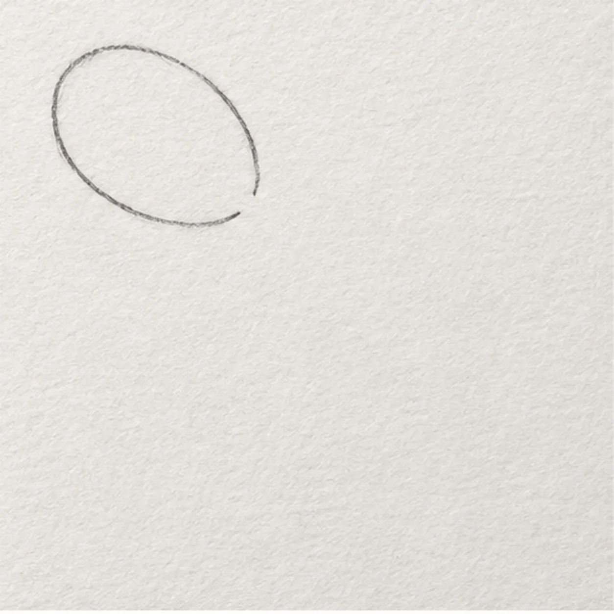
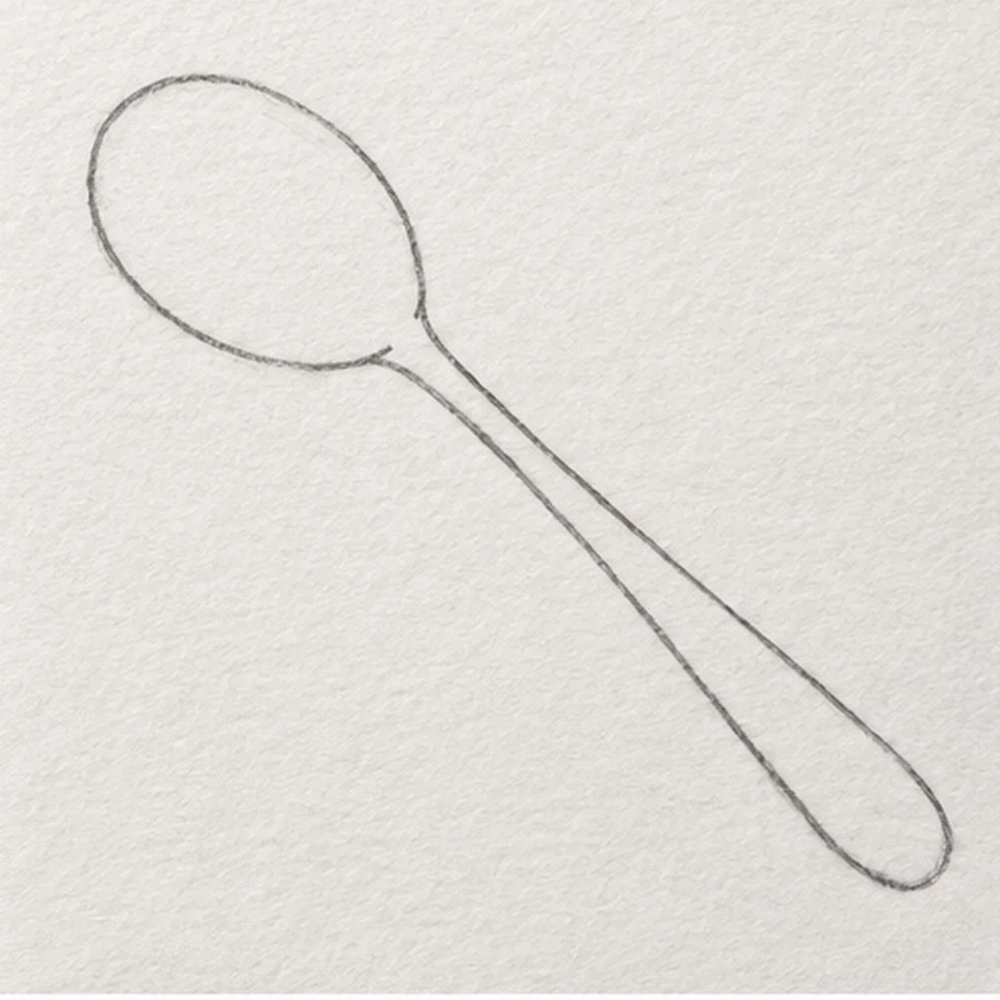
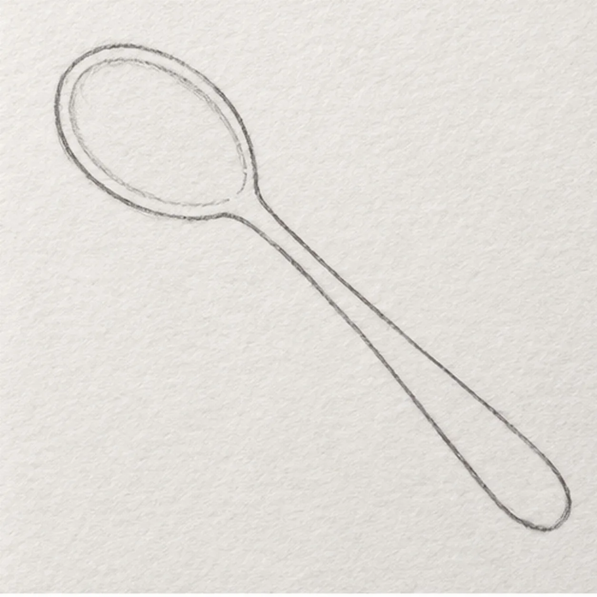
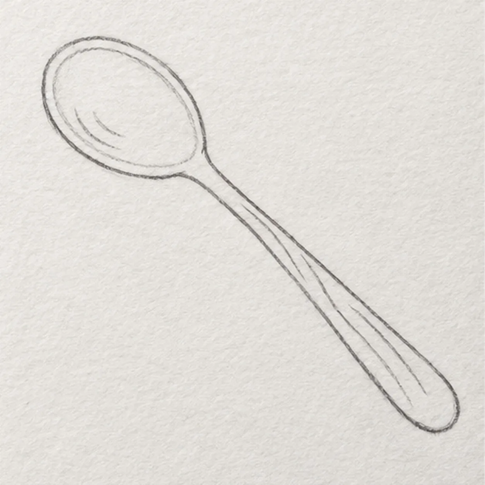
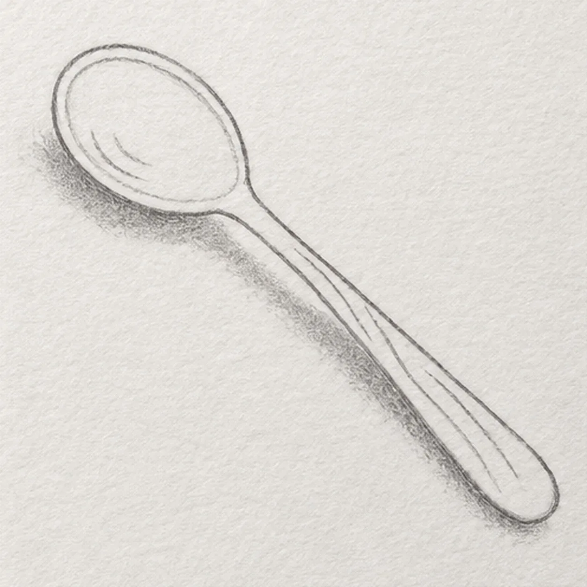

Pencil ready?
Let's draw a wooden spoon
Treat this as one small practice round: build the subject lightly, notice the shapes, then darken only the lines that help the finished sketch.
-
01

Outline the spoon bowl
Draw a wide tilted oval bowl at the upper left, leaving a narrow gap at its lower-right edge for the handle.
Sketch tip: Tilt the bowl before drawing; leave its lower-right gap open for the handle.
-
02

Pull the long handle
From the two open bowl ends, draw two gently converging lines toward the lower right and round their tip.
Sketch tip: Let both handle edges start from the bowl gap and taper gently toward the tip.
-
03

Carve the inner rim
Inside the bowl, echo its oval with a shallow inner curve, keeping the rim narrowest where the handle joins.
Sketch tip: Keep the inner curve close to the outer bowl edge to show thickness without making a second spoon.
-
04

Mark the wood grain
Add three short curved grain lines along the handle and two small crescent marks inside the bowl.
Sketch tip: Use three short handle curves and two small bowl crescents; follow the wood's direction.
-
05

Ground the spoon
Put a broken cast shadow just below the bowl and handle, leaving white paper between shadow and outer contour.
Sketch tip: Break the shadow into soft strokes and leave a narrow paper gap from the spoon.
-
06
Shade the carved wood
Layer warm brown pencil along the established bowl and handle, leaving a pale highlight in the bowl; deepen the existing ground shadow with soft graphite.
Sketch tip: Shade with the side of the pencil and preserve a pale highlight in the bowl.